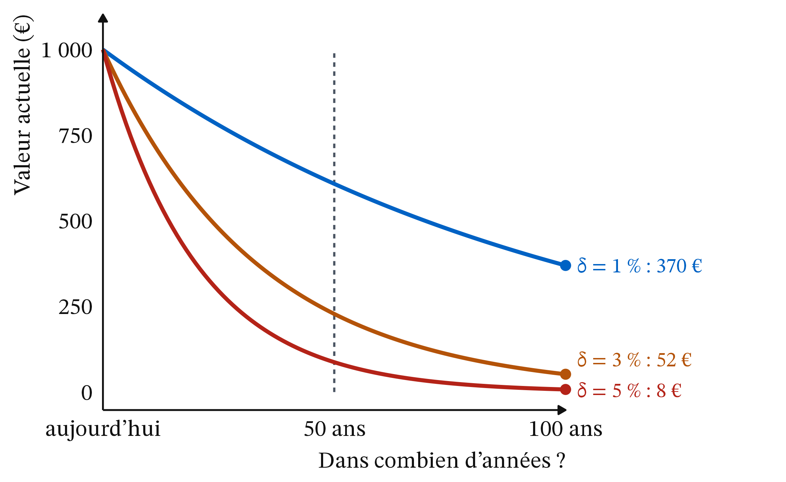

Peut-on donner un prix au futur ? Le climat entre Nord et Sud
CM 10 · Ouverture
Actualisation, externalité globale, justice climatique.
- Prix : ce qu’il faut céder pour obtenir une unité d’un bien. Il signale la rareté.
- Externalité et coût marginal social : quand une activité impose aux autres un dommage qu’elle ne paie pas, le coût pour la société dépasse le coût privé : Cms = Cm + Dm, où Dm est le dommage marginal. Sans correction, le marché va trop loin (CM 5).
- Taux d’intérêt nominal et réel : le taux nominal i est le prix du crédit, en % par an ; le taux réel r corrige de l’inflation π : r ≈ i − π (CM 7).
- Croissance g : la variation, en % par an, du PIB ou du revenu par habitant.
- Positif et normatif : l’analyse positive décrit ce qui est et se vérifie ; l’analyse normative dit ce qui devrait être, à partir d’un jugement de valeur.
1 La question
En mars 2025, une commission d’experts réunie par France Stratégie fixe la « valeur de l’action pour le climat » à 256 € par tonne de CO₂ évitée en 2025, contre 187 € auparavant, et à 300 € en 2030 (L’info durable, 20/03/2025). Ce prix sert à trier les projets : une action qui évite une tonne pour moins de 256 € est jugée rentable pour la collectivité. Le calcul repose sur un taux d’actualisation de 3,2 % par an (OFCE, blog, 18/11/2025).
Au même moment, les pays riches négocient avec les pays pauvres. À la COP29 de Bakou, les pays développés s’engagent à fournir « au moins 300 milliards de dollars par an d’ici 2035 » aux pays en développement, au lieu de 100 milliards (AFP, Connaissance des Énergies, 24/11/2024). La COP30 de Belém appelle à « au moins tripler » l’aide à l’adaptation d’ici 2035 (Connaissance des Énergies, mis à jour le 17/03/2026). La COP31 se tient à Antalya, en Turquie, du 9 au 20 novembre 2026 (UNRIC, 02/03/2026), après la rédaction de cette page (21/10/2026).
Deux faits intriguent.
- Une tonne de CO₂ émise aujourd’hui fera des dégâts pendant des décennies. Pourtant on lui donne un prix aujourd’hui, et ce prix dépend d’un simple taux.
- Les pays qui ont le plus émis ne sont pas ceux qui subissent le plus, ni ceux qui émettent le plus aujourd’hui.
La question de la séance : peut-on donner un prix au futur, et qui doit payer, du Nord ou du Sud ? Cette séance d’ouverture n’est pas évaluée. Elle réunit trois outils du semestre, le prix, l’externalité et le taux, et en ajoute un seul : l’actualisation.
2 Ce que dit la théorie
2.1 Un euro dans cent ans vaut moins qu’un euro aujourd’hui
Un dommage climatique arrive tard : la tonne de CO₂ émise en 2027 pèsera sur des récoltes et des côtes en 2060 ou en 2120. Pour comparer un coût payé aujourd’hui à un bénéfice obtenu dans un siècle, il faut une règle de conversion entre les dates.
Définition 1 (Actualisation) Actualiser, c’est convertir un montant futur en sa valeur d’aujourd’hui. C’est l’opération inverse du placement : 100 € placés à 5 % deviennent 105 € dans un an ; donc 105 € dans un an valent 100 € aujourd’hui.
Définition 2 (Taux d’actualisation) Le taux d’actualisation (δ) est le taux, en % par an, auquel on réduit la valeur d’un montant pour chaque année qui le sépare d’aujourd’hui. Plus δ est élevé, moins le futur pèse dans la décision.
Définition 3 (Valeur actuelle) La valeur actuelle d’un montant reçu (ou d’un dommage subi) dans n années est : valeur actuelle = montant ÷ (1 + δ)n. Le facteur 1 ÷ (1 + δ)n s’appelle le facteur d’actualisation. Il est compris entre 0 et 1.
La question « peut-on donner un prix au futur ? » devient alors : quel taux choisir ? Trois économistes y ont répondu différemment.
2.2 Le taux mêle impatience et enrichissement
Frank Ramsey (1928), « A Mathematical Theory of Saving », The Economic Journal, 38(152), p. 543-559 · école néoclassique (Cambridge). Ramsey cherche combien une nation doit épargner pour ses descendants. Il montre que la réponse dépend du fait que les générations futures seront plus riches ; quant à l’impatience pure, il la juge injustifiable.
On résume aujourd’hui son raisonnement par la règle qui porte son nom, la règle de Ramsey : le taux d’actualisation est la somme de deux termes.
δ = impatience pure + aversion à l’inégalité × g
- L’impatience pure est la préférence pour le présent seulement parce qu’il est le présent. Ramsey la qualifie de pratique « éthiquement indéfendable », qui « vient seulement d’une faiblesse de l’imagination » (1928, p. 543).
- Le second terme vient de la croissance g. Si nos petits-enfants sont plus riches, un euro de plus compte moins pour eux que pour nous, comme 100 € comptent moins pour un ménage aisé que pour un ménage modeste. L’aversion à l’inégalité dit à quel point on y tient : à 0, un euro vaut un euro pour tous ; à 2, on donne beaucoup de poids au plus pauvre.
2.3 Prendre le taux du marché, ou se donner un taux éthique
 2018 · Bengt Nyman, CC BY 2.0, Wikimedia Commons
2018 · Bengt Nyman, CC BY 2.0, Wikimedia Commons
William Nordhaus (1992), « An Optimal Transition Path for Controlling Greenhouse Gases », Science, 258(5086), p. 1315-1319 · école néoclassique. Ce premier modèle DICE relie l’économie et le climat : les émissions réchauffent la planète, le réchauffement détruit une part de la production. Avec un taux d’actualisation proche des rendements observés du capital, la politique optimale réduit les émissions progressivement, avec un prix du carbone qui monte avec le temps.
Pour Nordhaus, le taux d’actualisation n’est pas à inventer : il se lit dans l’économie, et il est proche du taux d’intérêt réel r que rapportent les placements. Le rendement réel avant impôt du capital des entreprises américaines a été « d’environ 7 % par an » pendant quarante ans (Nordhaus, conférence de Yale, 2007). Ce prix Nobel 2018 (The Conversation, 12/11/2018) défend un taux de « marché ».
 2015 · Royal Society, CC BY-SA 4.0, Wikimedia Commons
2015 · Royal Society, CC BY-SA 4.0, Wikimedia Commons
Nicholas Stern (2006), The Stern Review: The Economics of Climate Change, rapport remis en octobre 2006 (HM Treasury), publié par Cambridge University Press en 2007 · économie publique, rapport commandé par le gouvernement britannique. Le choix du taux est d’abord éthique : rien ne justifie de compter moins le bien-être d’une personne parce qu’elle naîtra plus tard. Avec un taux faible, agir tôt et fort coûte moins cher que laisser faire.
Stern retient une impatience pure presque nulle, ce qui donne un taux réel d’équilibre de 1,4 % par an (selon Nordhaus, 2007). Le rapport conclut que, sans action, le changement climatique coûterait l’équivalent d’« au moins 5 % du PIB mondial chaque année, maintenant et pour toujours », et jusqu’à 20 % en comptant plus de risques (cité par Nordhaus, 2007).
2.4 Le prix d’une tonne de CO₂
L’actualisation relie le climat à l’externalité. Émettre une tonne de CO₂ impose aux autres, et surtout aux générations futures, un dommage qu’on ne paie pas.
Définition 5 (Valeur de l’action pour le climat) La valeur de l’action pour le climat (VAC) est le prix d’une tonne de CO₂ évitée que retient l’État français pour évaluer les projets. Elle ne mesure pas les dommages : c’est le prix qui permet d’atteindre un objectif d’émissions donné (la trajectoire de la stratégie nationale bas-carbone, qui vise la neutralité en 2050) au moindre coût (OFCE, 18/11/2025). Elle augmente chaque année au rythme du taux d’actualisation.
| Étape | Ce qui se passe | Où le taux δ intervient |
|---|---|---|
| 1. Émission | Une tonne de CO₂ émise aujourd’hui s’ajoute au stock | non |
| 2. Dommages futurs | Elle cause des dégâts année après année, pendant des décennies | non |
| 3. Actualisation | On ramène chaque dommage futur à sa valeur d’aujourd’hui | oui : δ faible, dommages lourds |
| 4. Coût social du carbone | La somme des valeurs actuelles donne Dm | résultat sensible à δ |
| 5. VAC | L’État retient le prix qui atteint l’objectif 2050 au moindre coût | croît au rythme de δ |
| 6. Tri des projets | On retient les actions dont le coût par tonne évitée est inférieur à la VAC | non |
La Table 1 résume l’enchaînement : le taux n’agit qu’aux étapes 3 à 5, mais il en déplace le résultat.
3 Les outils
3.1 Plus le taux est élevé, plus le futur lointain s’efface
Les trois courbes partent de 1 000 € et s’écartent de plus en plus. L’écart entre 1 % et 5 % paraît faible sur une année ; sur un siècle, il multiplie la valeur actuelle par près de 50 (370 € contre 8 €). C’est un effet des intérêts composés : on réduit chaque année une somme déjà réduite.
Exemple 1 (Actualiser à la main)
- Sur deux ans. 100 € placés à 10 % deviennent 100 × 1,1 = 110 € dans un an, puis 110 × 1,1 = 121 € dans deux ans. À l’envers : 121 € reçus dans deux ans valent 121 ÷ 1,1 ÷ 1,1 = 100 € aujourd’hui, au taux de 10 %.
- La règle de 70. Un montant actualisé à δ % par an est divisé par deux environ tous les 70 ÷ δ ans. C’est une approximation.
- À 7 %, le taux de rendement cité par Nordhaus. La valeur est divisée par deux tous les 70 ÷ 7 = 10 ans. En 100 ans, on divise 10 fois par deux : 1 000 → 500 → 250 → 125 → 62,5 → … → environ 1 €. Un dommage de 1 000 € dans un siècle ne pèse presque rien aujourd’hui.
- À 1 %. On divise par deux tous les 70 ÷ 1 = 70 ans. Un dommage de 1 000 € dans 70 ans vaut environ 500 € aujourd’hui : il compte encore beaucoup.
- La leçon. Entre 1 % et 7 %, le taux est multiplié par 7, mais la valeur actuelle d’un dommage lointain est divisée par environ 300 (370 € à 1 % contre à peine 1 € à 7 %).
3.2 Le même projet donne trois réponses selon le taux
Le tableau ci-dessous donne les facteurs d’actualisation, calculés une fois pour toutes. Il suffit de multiplier un montant futur par le facteur pour obtenir sa valeur actuelle.
| Horizon | δ = 1 % | δ = 3 % | δ = 5 % |
|---|---|---|---|
| 50 ans | 0,61 | 0,23 | 0,09 |
| 100 ans | 0,370 | 0,052 | 0,008 |
Exemple 2 (Payer 100 aujourd’hui pour éviter 1 000 dans cent ans ?) Un pays peut dépenser 100 millions d’euros aujourd’hui (une digue, une centrale moins émettrice) pour éviter 1 000 millions d’euros de dommages dans 100 ans. Les chiffres sont fictifs. Faut-il le faire ?
- La règle de décision. On compare le coût d’aujourd’hui (100) à la valeur actuelle du dommage évité. Si elle dépasse 100, le projet vaut son coût.
- À 1 %. 1 000 × 0,370 = 370. C’est plus que 100 : on construit.
- À 3 %. 1 000 × 0,052 = 52. C’est moins que 100 : on ne construit pas.
- À 5 %. 1 000 × 0,008 = 8. Le projet paraît absurde.
- Le seuil. Le projet vaut son coût tant que le facteur dépasse 100 ÷ 1 000 = 0,1. Passer de 1 000 à 100, c’est diviser par deux un peu plus de trois fois (1 000 → 500 → 250 → 125 → 100). Sur 100 ans, cela fait une division par deux tous les 30 ans environ, donc, par la règle de 70, un taux d’environ 70 ÷ 30 ≈ 2,3 %. Au-dessus, on ne construit pas.
- La leçon. Les ingénieurs, les climatologues et le dommage sont les mêmes dans les trois cas. Seul le taux change, et il retourne la décision.
« Actualiser, c’est dire que les générations futures ne comptent pas. » Pas forcément. Avec une impatience nulle, on actualise encore si l’on pense que le futur sera plus riche (règle de Ramsey). Et un taux élevé peut se défendre au nom des générations futures : placer l’argent ailleurs à 7 % leur laisserait davantage, si on le leur transmet vraiment. Le désaccord porte sur la valeur du taux, pas sur le principe d’actualiser.
3.3 La règle de Ramsey explique l’écart entre 1,4 % et 5,5 %
On peut retrouver des taux du débat avec la règle de Ramsey, en paramètres d’illustration (seuls le 1,4 % de Stern et l’impatience de 1,5 % du modèle DICE-2007 viennent de Nordhaus, 2007 ; le reste est fixé ici pour l’exemple).
- Un réglage « à la Stern » : impatience 0,1 %, aversion à l’inégalité 1, croissance 1,3 % : δ = 0,1 + 1 × 1,3 = 1,4 %.
- Un réglage « à la Nordhaus » : impatience 1,5 %, aversion à l’inégalité 2, croissance 2 % : δ = 1,5 + 2 × 2 = 5,5 %.
L’essentiel de l’écart vient du second terme : qui attend beaucoup de croissance, ou tient beaucoup à l’égalité, actualise davantage.
3.4 Le taux déplace l’optimum d’émissions
On reprend le graphique de l’externalité (CM 5). En abscisse, les émissions Q ; la demande D mesure ce que rapporte une tonne de plus à celui qui émet (produire, chauffer, rouler). Le coût privé d’émettre, Cm, est faible. Le coût marginal social ajoute le dommage marginal, c’est-à-dire le coût social du carbone : Cms = Cm + Dm. Or Dm dépend du taux.
![Graphique avec les émissions en abscisse et des euros par tonne en ordonnée. Une droite bleue décroissante représente le bénéfice d'émettre D. Une droite horizontale ambre basse représente le coût privé Cm ; elle coupe D au point Q étoile, à droite. Deux droites horizontales ambre en tirets, plus hautes, représentent le coût marginal social : la plus basse, si le taux d'actualisation est élevé, coupe D en un optimum Q rond au milieu ; la plus haute, si le taux est faible, coupe D en un optimum Q rond à gauche.](cm10_files/figure-html/fig-cms-taux-1.png)
- Sans politique, chacun émet jusqu’en Q*, là où une tonne de plus ne lui rapporte plus que son coût privé.
- Avec un taux faible, les dommages futurs restent lourds en valeur actuelle : Cms est haut, l’optimum Q° est bas. Il faut réduire fortement et vite.
- Avec un taux élevé, les mêmes dommages s’effacent : Cms est plus bas, l’optimum Q° est plus proche de Q*. On réduit, mais moins et plus tard.
Nordhaus chiffre lui-même ce désaccord. Dans son modèle DICE mis à jour, la taxe carbone optimale pour 2010 vaut environ 30 $ par tonne de carbone ; avec les paramètres éthiques de Stern, environ 300 $ (Nordhaus, conférence de Yale, 2007). Une tonne de carbone correspond à environ 3,7 tonnes de CO₂ (44 ÷ 12) : cela fait environ 8 $ et 80 $ par tonne de CO₂. Ces dollars ne se comparent qu’avec prudence aux euros de 2023 de la VAC ci-dessous.
3.5 Application : le prix de la tonne de CO₂ à la française
Exemple 3 (La valeur de l’action pour le climat) La VAC vaut 256 € par tonne de CO₂ en 2025 (en euros de 2023) et croît au rythme du taux d’actualisation public, 3,2 % par an (OFCE, 18/11/2025).
- Un an plus tard. 256 × 1,032 ≈ 264 €. La VAC 2026 est d’environ 264 €.
- Cinq ans plus tard. On multiplie cinq fois par 1,032, soit par 1,17 environ : 256 × 1,17 ≈ 300 € en 2030. On retrouve le chiffre de la commission (L’info durable, 20/03/2025).
- Pourquoi le prix monte au rythme du taux ? Éviter une tonne en 2030 ou en 2025 compte autant pour l’objectif de 2050. En valeur actuelle, les deux tonnes doivent donc avoir le même prix : 300 € en 2030, actualisés à 3,2 %, valent bien 256 € en 2025. Sinon, il vaudrait mieux tout faire à la date où c’est le moins cher.
- Trier les projets. Selon France Stratégie, une pompe à chaleur évite une tonne pour environ 125 € : c’est moins que 256 €, elle est rentable pour la collectivité. Le biométhane coûte environ 393 € la tonne évitée : au seul regard du carbone, il ne l’est pas (L’info durable, 20/03/2025).
La VAC « ne doit pas être confondue avec un niveau souhaitable ou optimal de taxe carbone » (le commissaire général de France Stratégie, cité par L’info durable, 20/03/2025) : elle guide le calcul des projets, elle ne fixe pas un impôt.
4 Effets de répartition
4.1 Entre générations, un taux élevé ménage le présent
Un taux élevé allège l’effort d’aujourd’hui : on réduit plus tard, quand on sera plus riche et que les techniques auront progressé. La génération actuelle y gagne ; celle qui subira le réchauffement y perd, sauf si on lui transmet en échange plus de capital (usines, routes, savoirs). Un taux faible demande un effort tôt, au profit de générations qui seront, si la croissance continue, plus riches que nous.
4.2 Entre Nord et Sud, les émissions d’hier ne sont pas celles d’aujourd’hui

Le CO₂ s’accumule : ce qui réchauffe la planète aujourd’hui, c’est le stock émis depuis deux siècles, pas seulement le flux de l’année. Sur les 1 849 milliards de tonnes de CO₂ fossile émises de 1750 à 2024, les États-Unis et l’UE à 27 en ont émis près de 40 % avec moins de 10 % de la population mondiale (Figure 3). L’Afrique, avec 18 % de la population, en a émis 3 %.

Même si les flux annuels baissaient demain, la concentration continuerait de monter tant que le flux reste positif (Figure 4) : c’est ce stock qui cause les dommages futurs que le taux d’actualisation pèse.
Le flux, lui, a changé. En 2024, un habitant des États-Unis émet 14,2 tonnes de CO₂, un Chinois 8,7, un Européen de l’UE 5,4, un Français 4,0, un Indien 2,2 et un Nigérian 0,6, pour une moyenne mondiale de 4,7 (Global Carbon Budget 2025, traitement Our World in Data, téléchargé le 21/10/2026). En 1990, un Chinois émettait 2,2 tonnes : la Chine a dépassé l’UE par habitant, et son cumul (15,4 % du total) rattrape celui de l’UE (16,3 %).
![Six courbes de 1990 à 2024. La courbe bleue des États-Unis, la plus haute, part d'environ 20 tonnes par habitant, reste au-dessus de 20 jusqu'au milieu des années 2000 puis baisse jusqu'à 14,2 tonnes. La courbe ambre de l'Union européenne à 27 baisse de 9,2 à 5,4 tonnes. La courbe rouge de la Chine monte de 2,2 à 8,7 tonnes et passe au-dessus de l'Union européenne vers 2013, durablement depuis 2017. La moyenne mondiale, en tirets noirs, reste entre 4 et 5 tonnes. L'Inde, en gris, monte de 0,7 à 2,2 tonnes ; l'Afrique, en pointillés gris, reste autour d'une tonne.](cm10_files/figure-html/fig-flux-co2-1.png)
De 1990 à 2024, l’émission par habitant a baissé d’environ 30 % aux États-Unis et de plus de 40 % dans l’UE ; elle a été multipliée par 4 en Chine, qui dépasse l’UE chaque année depuis 2017 (Figure 5). L’Afrique reste autour d’une tonne par habitant sur toute la période.
Pour la France, il faut aussi compter ce qu’elle importe. Son empreinte carbone (tous gaz à effet de serre, importations comprises) est de 9,4 tonnes équivalent CO₂ par personne en 2023, contre 5,9 tonnes pour les émissions des seuls acteurs installés en France ; les importations font 56 % de l’empreinte (Insee, indicateurs ODD, Rapport 2024, données provisoires). Ils ne se comparent pas aux 4,0 tonnes ci-dessus (CO₂ seul, sans les importations).
4.3 Le Nord doit-il payer ?
La règle de Ramsey éclaire aussi cette question. Son second terme dit qu’un euro compte plus pour un plus pauvre. Si cet argument justifie de compter moins nos descendants plus riches, il justifie aussi de compter plus un agriculteur sahélien qu’un cadre parisien. Le même raisonnement qui réduit l’effort entre générations l’augmente entre pays.
La convention-cadre des Nations unies sur les changements climatiques (CCNUCC, 1992) pose le principe : les pays agissent « en fonction de leurs responsabilités communes mais différenciées et de leurs capacités respectives », et les pays développés doivent être « à l’avant-garde » (art. 3.1). Deux critères se mêlent : la responsabilité (le stock émis) et la capacité à payer (le revenu). La liste des pays développés qui financent les autres date de 1992 (art. 4.3 et annexe II).
Les négociations traduisent ce débat en milliards. À Bakou, l’objectif de 300 milliards de dollars par an d’ici 2035 doit financer la transition énergétique et l’adaptation des pays en développement. La Chine a refusé de figurer parmi les contributeurs obligés : les contributions des pays non « développés » restent volontaires (AFP, Connaissance des Énergies, 24/11/2024). À Belém, l’aide à l’adaptation devrait passer d’environ 40 à 120 milliards de dollars par an d’ici 2035, mais l’enveloppe totale de 300 milliards n’a pas été relevée (Connaissance des Énergies, mis à jour le 17/03/2026).
À l’intérieur d’un pays, la question se pose comme pour toute taxe : qui supporte le prix du carbone dépend de la part de l’énergie dans le budget et des possibilités de s’en passer (CM 2 et 5).
5 La controverse
5.1 Le désaccord porte sur un chiffre qui n’est pas seulement technique
Ce que l’analyse établit (positif).
- Le résultat d’une évaluation climatique dépend d’abord du taux d’actualisation. Pour Nordhaus lui-même, « presque toute la différence » entre le rapport Stern et les autres études vient de l’actualisation (conférence de Yale, 2007). Dans le scénario le plus pessimiste de Stern, les pertes sont inférieures à 1 % de la production mondiale en 2050 et d’environ 3 % en 2100 : c’est l’actualisation à un taux très faible qui les transforme en une perte « maintenant » de 14 % (ibid.).
- Chez Nordhaus, le coût social du carbone varie de 50 à 235 dollars par tonne de carbone (soit 14 à 64 dollars par tonne de CO₂) selon que l’on actualise à 5 % ou à 2,5 % (The Conversation, 12/11/2018).
- Le résultat dépend aussi de la fonction de dommages, qui traduit un réchauffement en perte de production. Dans le modèle de Nordhaus, un réchauffement de 6 °C ne détruirait que 10 % du PIB mondial (ibid.). Plus cette perte est forte, plus Dm est haut, quel que soit le taux.
Ce qui relève d’un jugement (normatif).
- Faut-il une impatience pure ? Ramsey et Stern disent non, pour des raisons morales ; d’autres répondent qu’il faut respecter les choix que font réellement les épargnants.
- Quel poids donner à l’égalité, entre générations et entre pays ?
- Faut-il prendre le rendement du capital comme repère, alors que l’argent non dépensé pour le climat n’est pas forcément investi au profit des générations futures ?
Les positions en présence.
- Nordhaus et l’approche « descriptive » : le taux se lit dans les rendements du marché ; un taux trop bas sacrifierait des investissements plus utiles (éducation, santé). Sa conclusion : un prix du carbone qui monte progressivement.
- Stern et l’approche « prescriptive » : le taux est un choix éthique, qu’aucun marché ne révèle, car les générations futures ne participent pas aux marchés d’aujourd’hui. Sa conclusion : des réductions fortes et immédiates.
- Les critiques du calcul lui-même, souvent issus de l’économie écologique : des économistes de l’Agence française de développement jugent la fonction de dommages de Nordhaus trop optimiste. Avec Robert Pindyck (MIT), lui-même bâtisseur de modèles économie-climat, ils estiment qu’un modèle aussi incertain donne aux décideurs « l’apparence de certitude » (The Conversation, 12/11/2018) : la critique vient aussi de l’intérieur de l’économie standard. Ils demandent de partir de la réalité physique des phénomènes (ressources, écosystèmes). C’est d’ailleurs la logique de la VAC française, calculée à partir d’un objectif d’émissions et non des dommages (OFCE, 18/11/2025).
Le choix du taux contient donc une réponse à la question de la séance : combien vaut, pour nous, le bien-être de ceux qui vivront après nous ?
Le Conseil constitutionnel a donné une portée juridique au souci des générations futures. Dans sa décision n° 2023-1066 QPC du 27 octobre 2023 (stockage des déchets radioactifs de Cigéo), il juge, à partir de la Charte de l’environnement, que le législateur doit veiller à ce que « les choix destinés à répondre aux besoins du présent ne compromettent pas la capacité des générations futures et des autres peuples à satisfaire leurs propres besoins ». Le texte vise donc à la fois les générations futures et les autres peuples : les deux questions de la séance. La loi contestée a été jugée conforme : le juge contrôle le principe, il ne fixe pas de taux d’actualisation.
6 À retenir
- Actualiser, c’est convertir un montant futur en valeur d’aujourd’hui : valeur actuelle = montant ÷ (1 + δ)n.
- Sur un siècle, un petit écart de taux change tout : 1 000 € dans cent ans valent 370 € à 1 % et 8 € à 5 %.
- Selon Ramsey, le taux d’actualisation additionne l’impatience pure et un terme lié à la croissance et à l’aversion à l’inégalité.
- Le coût social du carbone est la valeur actuelle des dommages d’une tonne de CO₂ : plus le taux est faible, plus il est élevé et plus l’optimum d’émissions est bas.
- Les États-Unis et l’UE ont émis près de 40 % du CO₂ accumulé depuis 1750 avec moins de 10 % de la population mondiale ; le débat sur qui doit payer est aussi un débat sur le poids donné aux plus pauvres.
- Le choix du taux mêle des faits (rendements, croissance) et un jugement de valeur (le poids des générations futures).
7 Pour aller plus loin
Dessine-moi l’éco · « C’est vrai ça ? - La France est un petit émetteur de gaz à effet de serre, non ? » · 3 min 21 · mis en ligne le 18/05/2023
Dessine-moi l’éco · « C’est vrai ça – Changement climatique : c’est vraiment trop tard pour agir ? » · 3 min 43 · mis en ligne le 17/07/2023
- Arte, Le Dessous des cartes, « Climat : où en serons-nous en 2055 ? | Une leçon de géopolitique », 16 min 09, mis en ligne sur YouTube le 19/06/2026. Lien
Articles
- L’info durable, « Climat : France Stratégie réhausse la “valeur” du carbone, outil d’aide à la décision », 20/03/2025. Lien
- The Conversation, A. Godin, É. Espagne, F. Mc Isaac, G. Giraud et O. Lecuyer (AFD), « Retour sur la polémique autour du prix Nobel d’économie à William Nordhaus », 12/11/2018 (un point de vue critique sur Nordhaus). Lien
- AFP, Connaissance des Énergies, « COP29 : les principaux points de l’accord arraché à Bakou », 24/11/2024. Lien
- Connaissance des Énergies, « Climat : que faut-il retenir de la COP30 à Belém ? », mis à jour le 17/03/2026. Lien
Sources institutionnelles et académiques
- OFCE, blog, L. Sequeira et F. Reynès, « Quels leviers comptent pour la valeur de l’action climatique ? », 18/11/2025. Lien
- W. Nordhaus, « Comments on the Stern Review » (conférence de Yale sur le rapport Stern, 2007, en anglais). Lien
- Insee, « Empreinte carbone », indicateurs des objectifs de développement durable, Rapport 2024 (données 2023). Lien
- Our World in Data, « Cumulative CO₂ emissions » (Global Carbon Budget 2025), consulté le 21/10/2026. Lien
- UNRIC, « UNFCCC: COP31 - der Weg nach Antalya », 02/03/2026 (en allemand). Lien
- Conseil constitutionnel, décision n° 2023-1066 QPC du 27 octobre 2023. Lien
- N. Stern, The Stern Review report on the economics of climate change, rapport remis en octobre 2006 (HM Treasury), publié par Cambridge University Press en 2007, notice LSE Research Online. Lien
- Nations unies, Convention-cadre des Nations unies sur les changements climatiques, New York, 9 mai 1992 (texte officiel, version française incluse), Collection des traités des Nations unies. Lien